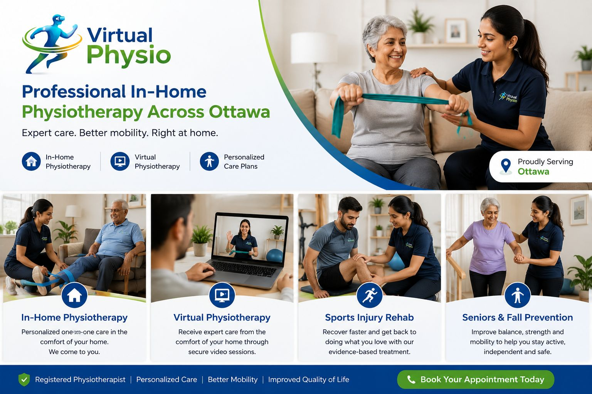

Patient-first virtual physiotherapy support from wherever you are.
Virtual Physio focuses on movement education, recovery planning and guided exercise so every patient understands what is happening, why it matters and how to keep improving.
Restore movement with evidence-based physiotherapy and confidence.
Virtual Physio helps people in Ottawa recover from pain, surgery, injury and mobility challenges through personalized virtual, in-home and person-to-person physiotherapy plans. In-home treatment in Ottawa is available for patients who prefer care at home, and a home clinic room option is available by request. Strong recovery starts with listening: each appointment begins with a focused assessment, clear goals and a treatment plan that respects the patient's lifestyle, comfort and pace. Care may include corrective exercise, posture training, education, self-management strategies and progress tracking to reduce symptoms and prevent relapse. Whether a patient is returning to sport, rebuilding strength after surgery, managing chronic back pain or seeking safer movement in daily life, the approach is calm, practical and measurable. Virtual Physio is built around trust, clear communication and patient-centered care. Each treatment step is explained in plain language, and patients are encouraged to ask questions at every stage. The goal is not only to relieve pain, but to help each person move with confidence, independence and long-term control over their health.
Care values
- Evidence-based treatment plans
- Respectful patient communication
- Accessible virtual, in-home and home clinic room appointments in Ottawa
- Measurable recovery milestones
- Prevention-focused education
